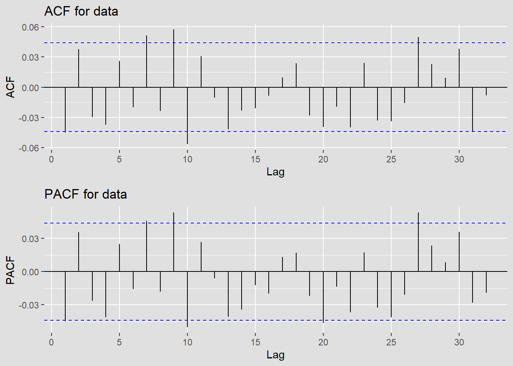
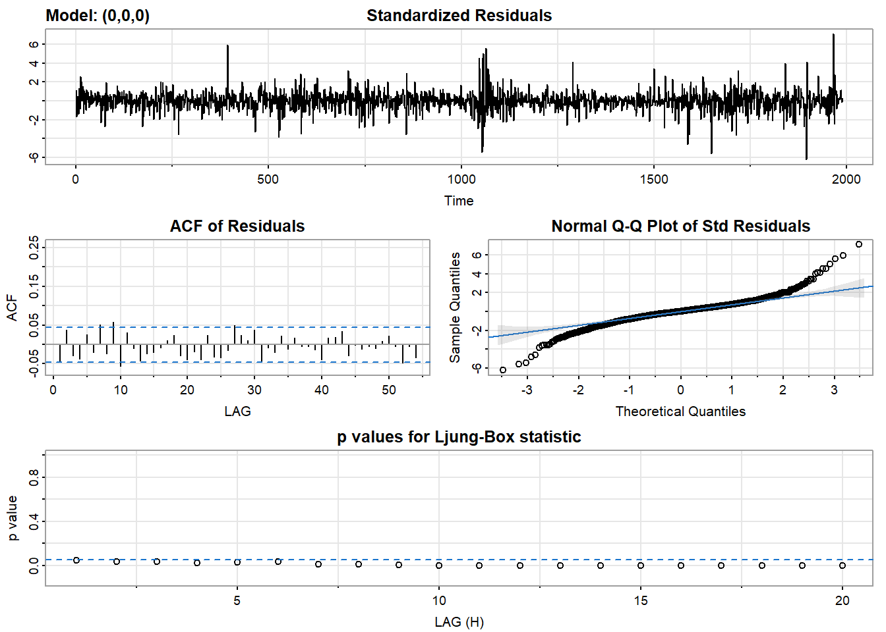
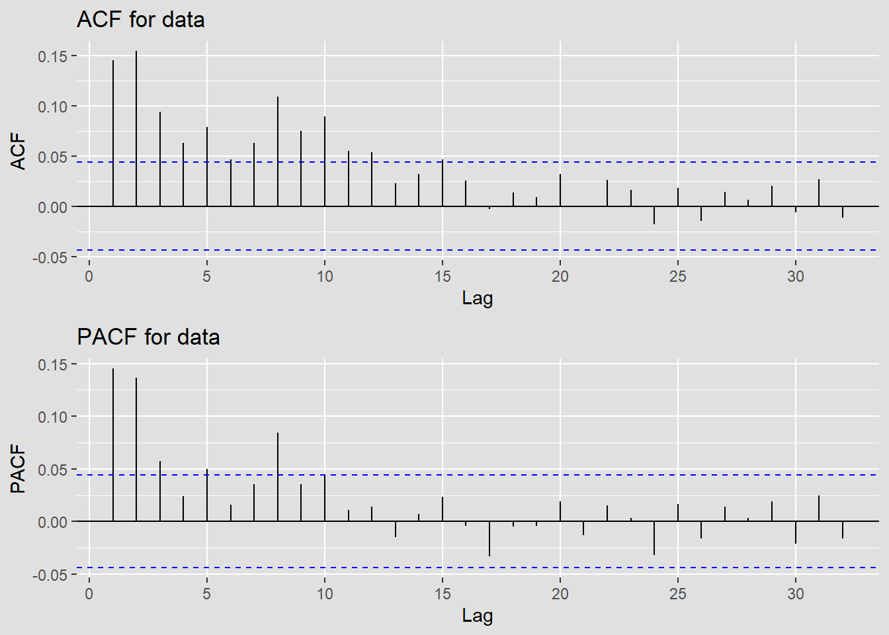
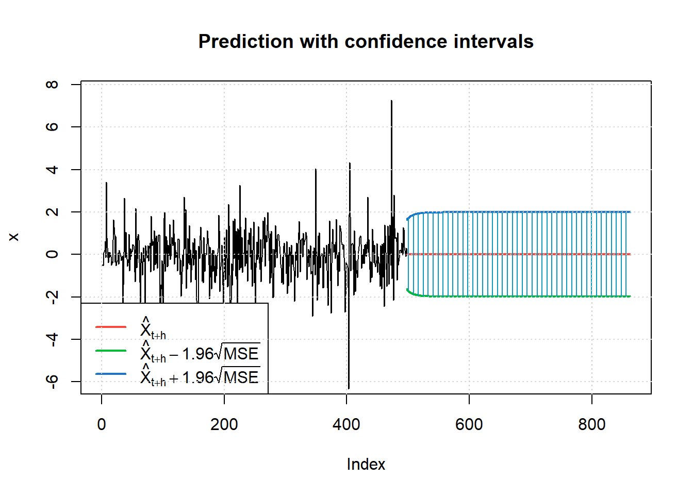
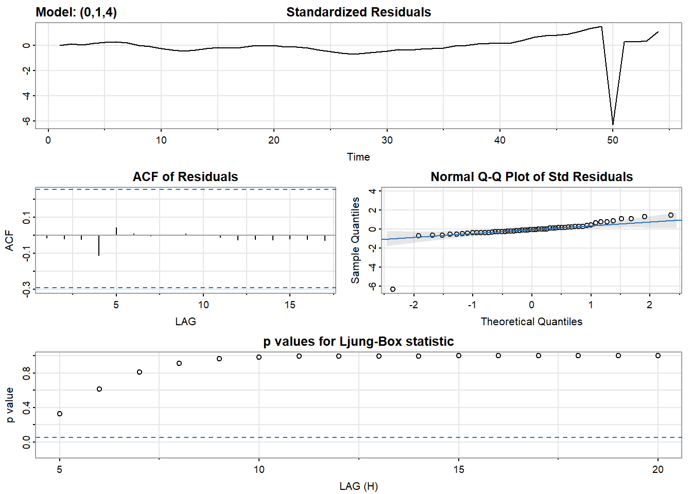
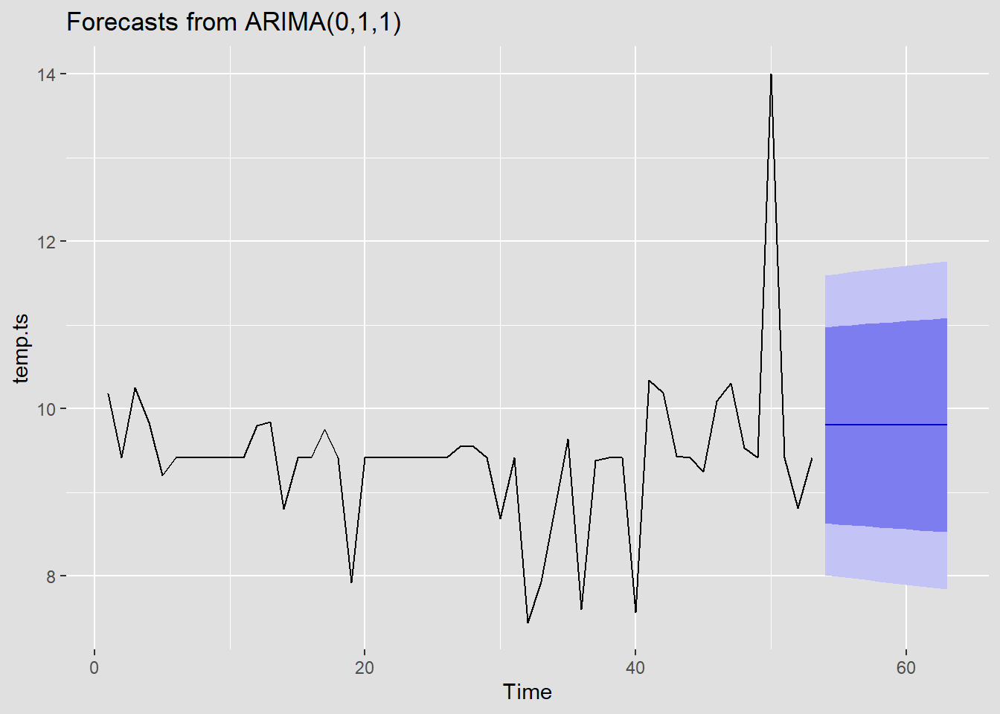

Financial Time Series Models (ARCH/GARCH)
In this section, the goal is to determine if the GARCH model can help the dataset better. The basic work flow of this section is to compare different models within ARIMA models. Then Based on different analysis to determine whether a GARCH model can help or not. In my case, the goal is to apply the models on the following datasets: Income Stock, Home value, Sale price, Rental price. The corresponding returns are being calculated before fitting into to differnet models through model diagnostics.
Income Stock Analaysis
Prepare the Dataset
Income Stock Analsyis with Verizon
Literuature Review: Since my big picture and goal is to evaluate the correlation between Home values, prices and income to see the impact among them. Therefore, an income stock would be effective for me to get my result.
Wireless subscribers of Verizon provide a reliable base of revenue and cash flow. Verizon generated an impressive $12.4 billion of free cash flow through the first nine months of 2022, giving it the funds to reward its shareholders with $8.1 billion in dividends.
Verizon’s shares offer a hefty dividend yield (it was more than 6% in late 2022). The telecom giant has also increased its dividend for 16 straight years, the longest current streak in the U.S. telecom sector. That attractive and growing income stream makes Verizon a great stock for earning passive income.
Using this dataset, I can represent and make analysis on the income to see if the modeling can capture the pattern effectively.
Calculate the Returns
[1] "VZ" Income Stock Returns date
2016-01-05 0.013641027 2016-01-05
2016-01-06 -0.021300513 2016-01-06
2016-01-07 -0.005507228 2016-01-07
2016-01-08 -0.009766973 2016-01-08
2016-01-11 0.005782897 2016-01-11
2016-01-12 -0.003554766 2016-01-12Here, we also have the new column for returns
Code
stock$date<-as.Date(stock$date,"%Y-%m-%d")
fig <- plot_ly(stock, x = ~date, y = ~`Income Stock Returns`, name = 'Income Stock Returns From 2016', type = 'scatter', mode = 'lines') %>%
layout(
title = "Income Stock Returns From 2016",
paper_bgcolor = '#E0E0E0', # Set the background color
plot_bgcolor = '#E0E0E0', # Set the background color
xaxis = list(title = "Date"),
yaxis = list(title = "Stock returns")
)Stationarity
The plot shows no particular trend. This indicates that the series is likely stationary because the mean of the series could be constant or not changing too much over time.
Volatility
The series seems to exhibit periods of different volatility levels within expectations. However, overall, it is pretty steady throughout the time. There are some fluctuations, but the variations appear relatively stable and small.
Volatility in financial time series is often clustered; periods of high volatility are followed by periods of high volatility, and periods of low volatility are followed by periods of low volatility. This plot suggests such clustering might be present.
Prepare to fit the model and check acf and pacf
Code
returns = ts(stock$`Income Stock Returns`)
acf_plot <- ggAcf(returns) +
labs(title = "ACF for data") +
theme(
panel.background = element_rect(fill = "#E0E0E0", color = "#E0E0E0"),
plot.background = element_rect(fill = "#E0E0E0", color = "#E0E0E0")
)
pacf_plot <- ggPacf(returns) +
labs(title = "PACF for data") +
theme(
panel.background = element_rect(fill = "#E0E0E0", color = "#E0E0E0"),
plot.background = element_rect(fill = "#E0E0E0", color = "#E0E0E0")
)
# Combine the plots
grid.arrange(acf_plot, pacf_plot, ncol = 1) 
We can see that the plots for the returns are weakly stationary.
ACF of absolute values of the returns
Code
acf_plot <- ggAcf(abs(returns)) +
labs(title = "ACF for data") +
theme(
panel.background = element_rect(fill = "#E0E0E0", color = "#E0E0E0"),
plot.background = element_rect(fill = "#E0E0E0", color = "#E0E0E0")
)
pacf_plot <- ggPacf(abs(returns)) +
labs(title = "PACF for data") +
theme(
panel.background = element_rect(fill = "#E0E0E0", color = "#E0E0E0"),
plot.background = element_rect(fill = "#E0E0E0", color = "#E0E0E0")
)
# Combine the plots
grid.arrange(acf_plot, pacf_plot, ncol = 1) ACF for squared values
Code
acf_plot <- ggAcf(returns^2) +
labs(title = "ACF for data") +
theme(
panel.background = element_rect(fill = "#E0E0E0", color = "#E0E0E0"),
plot.background = element_rect(fill = "#E0E0E0", color = "#E0E0E0")
)
pacf_plot <- ggPacf(returns^2) +
labs(title = "PACF for data") +
theme(
panel.background = element_rect(fill = "#E0E0E0", color = "#E0E0E0"),
plot.background = element_rect(fill = "#E0E0E0", color = "#E0E0E0")
)
# Combine the plots
grid.arrange(acf_plot, pacf_plot, ncol = 1) Based on the acf and pacf, we can see that the returns are weakly stationary.
Code
library(tseries)
adf.test(returns)Warning in adf.test(returns): p-value smaller than printed p-value
Augmented Dickey-Fuller Test
data: returns
Dickey-Fuller = -12.643, Lag order = 12, p-value = 0.01
alternative hypothesis: stationaryWe can see that there are little correlations left. The returns are stationary.
Fit an appropriate AR+ARCH/ARMA+GARCH or ARIMA-ARCH/GARCH
First, determine the ARIMA model using model diagnostic
Code
# Reference from the lab 6 part 1 demo:
temp.ts = returns
d=0
i=1
temp= data.frame()
ls=matrix(rep(NA,6*71),nrow=71)
for (p in 1:5)
{
for(q in 1:5)
{
for(d in 0:2)#
{
if(p-1+d+q-1<=8)
{
model<- Arima(temp.ts,order=c(p-1,d,q-1),include.drift=FALSE)
ls[i,]= c(p-1,d,q-1,model$aic,model$bic,model$aicc)
i=i+1
#print(i)
}
}
}
}
temp= as.data.frame(ls)
names(temp)= c("p","d","q","AIC","BIC","AICc")
knitr::kable(temp)| p | d | q | AIC | BIC | AICc |
|---|---|---|---|---|---|
| 0 | 0 | 0 | -11784.278 | -11773.087 | -11784.272 |
| 0 | 1 | 0 | -10314.312 | -10308.717 | -10314.310 |
| 0 | 2 | 0 | -8075.542 | -8069.947 | -8075.540 |
| 0 | 0 | 1 | -11786.059 | -11769.273 | -11786.047 |
| 0 | 1 | 1 | -11769.767 | -11758.577 | -11769.760 |
| 0 | 2 | 1 | -10298.528 | -10287.339 | -10298.522 |
| 0 | 0 | 2 | -11786.670 | -11764.289 | -11786.650 |
| 0 | 1 | 2 | -11771.484 | -11754.699 | -11771.471 |
| 0 | 2 | 2 | -11729.401 | -11712.618 | -11729.389 |
| 0 | 0 | 3 | -11787.083 | -11759.106 | -11787.053 |
| 0 | 1 | 3 | -11772.138 | -11749.759 | -11772.118 |
| 0 | 2 | 3 | -11727.533 | -11705.155 | -11727.513 |
| 0 | 0 | 4 | -11787.103 | -11753.531 | -11787.061 |
| 0 | 1 | 4 | -11772.491 | -11744.517 | -11772.461 |
| 0 | 2 | 4 | -11720.458 | -11692.486 | -11720.428 |
| 1 | 0 | 0 | -11786.326 | -11769.540 | -11786.314 |
| 1 | 1 | 0 | -10995.568 | -10984.378 | -10995.562 |
| 1 | 2 | 0 | -9401.195 | -9390.006 | -9401.189 |
| 1 | 0 | 1 | -11786.262 | -11763.880 | -11786.241 |
| 1 | 1 | 1 | -11771.734 | -11754.949 | -11771.722 |
| 1 | 2 | 1 | -10978.578 | -10961.794 | -10978.565 |
| 1 | 0 | 2 | -11785.422 | -11757.445 | -11785.392 |
| 1 | 1 | 2 | -11771.382 | -11749.003 | -11771.362 |
| 1 | 2 | 2 | -11740.820 | -11718.442 | -11740.800 |
| 1 | 0 | 3 | -11785.921 | -11752.349 | -11785.879 |
| 1 | 1 | 3 | -11773.178 | -11745.203 | -11773.147 |
| 1 | 2 | 3 | -11728.141 | -11700.169 | -11728.111 |
| 1 | 0 | 4 | -11796.959 | -11757.791 | -11796.902 |
| 1 | 1 | 4 | -11776.563 | -11742.993 | -11776.520 |
| 1 | 2 | 4 | -11739.164 | -11705.597 | -11739.121 |
| 2 | 0 | 0 | -11786.845 | -11764.463 | -11786.825 |
| 2 | 1 | 0 | -11193.594 | -11176.809 | -11193.582 |
| 2 | 2 | 0 | -9974.212 | -9957.429 | -9974.200 |
| 2 | 0 | 1 | -11785.229 | -11757.252 | -11785.199 |
| 2 | 1 | 1 | -11772.305 | -11749.926 | -11772.285 |
| 2 | 2 | 1 | -11175.964 | -11153.587 | -11175.944 |
| 2 | 0 | 2 | -11788.210 | -11754.637 | -11788.167 |
| 2 | 1 | 2 | -11770.628 | -11742.654 | -11770.598 |
| 2 | 2 | 2 | -11729.807 | -11701.835 | -11729.777 |
| 2 | 0 | 3 | -11784.799 | -11745.631 | -11784.743 |
| 2 | 1 | 3 | -11770.546 | -11736.977 | -11770.504 |
| 2 | 2 | 3 | -11739.824 | -11706.257 | -11739.781 |
| 2 | 0 | 4 | -11794.894 | -11750.131 | -11794.821 |
| 2 | 1 | 4 | -11769.713 | -11730.549 | -11769.657 |
| 2 | 2 | 4 | -11726.296 | -11687.136 | -11726.240 |
| 3 | 0 | 0 | -11786.235 | -11758.258 | -11786.205 |
| 3 | 1 | 0 | -11295.636 | -11273.256 | -11295.615 |
| 3 | 2 | 0 | -10250.987 | -10228.609 | -10250.967 |
| 3 | 0 | 1 | -11785.361 | -11751.789 | -11785.319 |
| 3 | 1 | 1 | -11771.653 | -11743.679 | -11771.623 |
| 3 | 2 | 1 | -11277.547 | -11249.575 | -11277.517 |
| 3 | 0 | 2 | -11784.969 | -11745.801 | -11784.912 |
| 3 | 1 | 2 | -11770.766 | -11737.197 | -11770.724 |
| 3 | 2 | 2 | -11706.652 | -11673.086 | -11706.610 |
| 3 | 0 | 3 | -11782.921 | -11738.158 | -11782.848 |
| 3 | 1 | 3 | -11763.814 | -11724.650 | -11763.757 |
| 3 | 2 | 3 | -11732.633 | -11693.472 | -11732.576 |
| 3 | 0 | 4 | -11794.045 | -11743.686 | -11793.954 |
| 3 | 1 | 4 | -11758.396 | -11713.637 | -11758.324 |
| 4 | 0 | 0 | -11787.620 | -11754.048 | -11787.578 |
| 4 | 1 | 0 | -11408.712 | -11380.737 | -11408.681 |
| 4 | 2 | 0 | -10509.962 | -10481.990 | -10509.932 |
| 4 | 0 | 1 | -11797.946 | -11758.779 | -11797.890 |
| 4 | 1 | 1 | -11773.007 | -11739.438 | -11772.965 |
| 4 | 2 | 1 | -11390.140 | -11356.574 | -11390.098 |
| 4 | 0 | 2 | -11795.843 | -11751.080 | -11795.771 |
| 4 | 1 | 2 | -11783.352 | -11744.188 | -11783.296 |
| 4 | 2 | 2 | -11724.873 | -11685.712 | -11724.816 |
| 4 | 0 | 3 | -11794.344 | -11743.986 | -11794.253 |
| 4 | 1 | 3 | -11776.726 | -11731.967 | -11776.654 |
| 4 | 0 | 4 | -11798.011 | -11742.057 | -11797.900 |
Evaluations using AIC, BIC, and AICc
p d q AIC BIC AICc
71 4 0 4 -11798.01 -11742.06 -11797.9 p d q AIC BIC AICc
1 0 0 0 -11784.28 -11773.09 -11784.27 p d q AIC BIC AICc
71 4 0 4 -11798.01 -11742.06 -11797.9We can see that for (4,0,4) has the lowest AIC and AICc. For (0,0,0), it has the lowest BIC. Therefore we should compare them.
Compare ARIMA Models for (4,0,4) and ARIMA (0,0,0)

final value -4.389781
converged
$fit
Call:
arima(x = xdata, order = c(p, d, q), seasonal = list(order = c(P, D, Q), period = S),
xreg = xmean, include.mean = FALSE, transform.pars = trans, fixed = fixed,
optim.control = list(trace = trc, REPORT = 1, reltol = tol))
Coefficients:
ar1 ar2 ar3 ar4 ma1 ma2 ma3 ma4 xmean
-0.247 0.8466 -0.2862 -0.8485 0.2041 -0.840 0.2939 0.7924 -1e-04
s.e. NaN 0.0532 NaN 0.0594 NaN 0.061 NaN 0.0764 3e-04
sigma^2 estimated as 0.0001538: log likelihood = 5909.01, aic = -11798.01
$degrees_of_freedom
[1] 1980
$ttable
Estimate SE t.value p.value
ar1 -0.2470 NaN NaN NaN
ar2 0.8466 0.0532 15.9193 0.0000
ar3 -0.2862 NaN NaN NaN
ar4 -0.8485 0.0594 -14.2937 0.0000
ma1 0.2041 NaN NaN NaN
ma2 -0.8400 0.0610 -13.7643 0.0000
ma3 0.2939 NaN NaN NaN
ma4 0.7924 0.0764 10.3780 0.0000
xmean -0.0001 0.0003 -0.2653 0.7908
$AIC
[1] -5.93163
$AICc
[1] -5.931584
$BIC
[1] -5.903498
NA
sigma^2 estimated as 0.0001562: log likelihood = 5894.14, aic = -11784.28
$degrees_of_freedom
[1] 1988
$ttable
Estimate SE t.value p.value
xmean -1e-04 3e-04 -0.3618 0.7176
$AIC
[1] -5.924725
$AICc
[1] -5.924724
$BIC
[1] -5.919099Based on the model comparsion and diagnostic, I think that ARIMA Models for (4,0,4) is better with smaller evaluation matrices and it is more suitable and proper based on acf and pacf plots. In addition, the acf of residule is also more stationary.
Fit the best one ARIMA(4,0,4)
Code
fit2 <- arima(temp.ts, order = c(4,0,4))
summary(fit2)
Call:
arima(x = temp.ts, order = c(4, 0, 4))
Coefficients:
ar1 ar2 ar3 ar4 ma1 ma2 ma3 ma4
-0.247 0.8466 -0.2862 -0.8485 0.2041 -0.840 0.2939 0.7924
s.e. NaN 0.0532 NaN 0.0594 NaN 0.061 NaN 0.0764
intercept
-1e-04
s.e. 3e-04
sigma^2 estimated as 0.0001538: log likelihood = 5909.01, aic = -11798.01
Training set error measures:
ME RMSE MAE MPE MAPE MASE ACF1
Training set -3.294879e-05 0.012403 0.008678594 NaN Inf 0.6865102 0.003849689get the residuals of the arima model
We can see that mostly, the residual is stationary however the residuals of ARIMA model indicates some flutucations. In this case, I think that we can try to fit an ARCH/GARCH model.
Therefore, I think we can further making analysis by adding GARCH models to see if we should use it.
Model Diagnostics For ARCH/GARCH model
Acf and pacf for squared residuals

We can see that it is not yet stationary for squared residuals. GARCH model can be applied.
However, no matter what, I still think that I should make a further diagnostic and compare the results.
Code
mean_res <- mean(arima.res, na.rm = TRUE)
sd_res <- sd(arima.res, na.rm = TRUE)
# Normalize the residuals
arima.res <- (arima.res - mean_res) / sd_res
model <- list() ## set counter
cc <- 1
for (p in 1:7) {
for (q in 1:7) {
model[[cc]] <- garch(arima.res,order=c(q,p),trace=F)
cc <- cc + 1
}
}
## get AIC values for model evaluation
GARCH_AIC <- sapply(model, AIC) ## model with lowest AIC is the best[1] 35
Call:
garch(x = arima.res, order = c(q, p), trace = F)
Coefficient(s):
a0 a1 a2 a3 a4 a5 b1
3.255e-01 1.700e-01 5.709e-02 4.541e-02 7.834e-03 1.036e-01 3.917e-03
b2 b3 b4 b5 b6 b7
3.681e-14 6.165e-02 2.428e-02 1.394e-02 3.796e-02 1.599e-01 From here, I think that garch(5,6) is a good choice
NOTE: Packages 'fBasics', 'timeDate', and 'timeSeries' are no longer
attached to the search() path when 'fGarch' is attached.
If needed attach them yourself in your R script by e.g.,
require("timeSeries")
Attaching package: 'fGarch'The following object is masked from 'package:TTR':
volatility
Title:
GARCH Modelling
Call:
garchFit(formula = ~garch(5, 6), data = arima.res, trace = F)
Mean and Variance Equation:
data ~ garch(5, 6)
<environment: 0x0000024c026ac598>
[data = arima.res]
Conditional Distribution:
norm
Coefficient(s):
mu omega alpha1 alpha2 alpha3 alpha4
-1.3334e-16 2.2805e-01 1.3892e-01 5.5386e-02 2.9080e-02 1.0000e-08
alpha5 beta1 beta2 beta3 beta4 beta5
7.4958e-02 1.0000e-08 1.0000e-08 3.1101e-01 1.6961e-01 1.0000e-08
beta6
1.0000e-08
Std. Errors:
based on Hessian
Error Analysis:
Estimate Std. Error t value Pr(>|t|)
mu -1.333e-16 2.050e-02 0.000 1.000000
omega 2.281e-01 2.378e-01 0.959 0.337569
alpha1 1.389e-01 3.785e-02 3.671 0.000242 ***
alpha2 5.539e-02 8.863e-02 0.625 0.532009
alpha3 2.908e-02 1.077e-01 0.270 0.787205
alpha4 1.000e-08 1.061e-01 0.000 1.000000
alpha5 7.496e-02 5.815e-02 1.289 0.197411
beta1 1.000e-08 6.285e-01 0.000 1.000000
beta2 1.000e-08 3.236e-01 0.000 1.000000
beta3 3.110e-01 1.686e-01 1.845 0.065040 .
beta4 1.696e-01 2.189e-01 0.775 0.438419
beta5 1.000e-08 3.875e-01 0.000 1.000000
beta6 1.000e-08 NaN NaN NaN
---
Signif. codes: 0 '***' 0.001 '**' 0.01 '*' 0.05 '.' 0.1 ' ' 1
Log Likelihood:
-2713.137 normalized: -1.364071
Description:
Wed Nov 29 16:05:37 2023 by user: yzh20
Standardised Residuals Tests:
Statistic p-Value
Jarque-Bera Test R Chi^2 1581.8527957 0.0000000
Shapiro-Wilk Test R W 0.9554656 0.0000000
Ljung-Box Test R Q(10) 7.1822456 0.7081351
Ljung-Box Test R Q(15) 12.5497978 0.6370270
Ljung-Box Test R Q(20) 26.9211475 0.1374971
Ljung-Box Test R^2 Q(10) 2.5759255 0.9897225
Ljung-Box Test R^2 Q(15) 5.0979651 0.9912640
Ljung-Box Test R^2 Q(20) 6.2137343 0.9985764
LM Arch Test R TR^2 3.5366611 0.9904233
Information Criterion Statistics:
AIC BIC SIC HQIC
2.741214 2.777785 2.741129 2.754645 The results shows that (5,6) is not an optimal fit. The coefficients are not significant.
Therefore, let us try GARCH(1,2) and GARCH(1,1)
Try to compare with Garch(1,1),Garch(1,2)
Title:
GARCH Modelling
Call:
garchFit(formula = ~garch(1, 1), data = arima.res, trace = F)
Mean and Variance Equation:
data ~ garch(1, 1)
<environment: 0x0000024c7e84fca8>
[data = arima.res]
Conditional Distribution:
norm
Coefficient(s):
mu omega alpha1 beta1
-1.3334e-16 9.3712e-02 1.0896e-01 7.9911e-01
Std. Errors:
based on Hessian
Error Analysis:
Estimate Std. Error t value Pr(>|t|)
mu -1.333e-16 2.029e-02 0.000 1.000000
omega 9.371e-02 2.778e-02 3.373 0.000742 ***
alpha1 1.090e-01 2.091e-02 5.210 1.89e-07 ***
beta1 7.991e-01 4.333e-02 18.442 < 2e-16 ***
---
Signif. codes: 0 '***' 0.001 '**' 0.01 '*' 0.05 '.' 0.1 ' ' 1
Log Likelihood:
-2721.868 normalized: -1.36846
Description:
Wed Nov 29 16:05:37 2023 by user: yzh20
Standardised Residuals Tests:
Statistic p-Value
Jarque-Bera Test R Chi^2 1854.7393462 0.0000000
Shapiro-Wilk Test R W 0.9525268 0.0000000
Ljung-Box Test R Q(10) 7.2422746 0.7023919
Ljung-Box Test R Q(15) 12.7395305 0.6224086
Ljung-Box Test R Q(20) 26.6125727 0.1465200
Ljung-Box Test R^2 Q(10) 3.4425350 0.9690136
Ljung-Box Test R^2 Q(15) 6.4637622 0.9708614
Ljung-Box Test R^2 Q(20) 7.8107466 0.9930476
LM Arch Test R TR^2 4.5471699 0.9714228
Information Criterion Statistics:
AIC BIC SIC HQIC
2.740943 2.752196 2.740935 2.745076
Title:
GARCH Modelling
Call:
garchFit(formula = ~garch(1, 2), data = arima.res, trace = F)
Mean and Variance Equation:
data ~ garch(1, 2)
<environment: 0x0000024c00ce7040>
[data = arima.res]
Conditional Distribution:
norm
Coefficient(s):
mu omega alpha1 beta1 beta2
-1.3334e-16 1.2965e-01 1.5592e-01 2.9009e-01 4.2782e-01
Std. Errors:
based on Hessian
Error Analysis:
Estimate Std. Error t value Pr(>|t|)
mu -1.333e-16 2.025e-02 0.000 1.000000
omega 1.296e-01 3.912e-02 3.314 0.000919 ***
alpha1 1.559e-01 3.076e-02 5.069 4.01e-07 ***
beta1 2.901e-01 1.383e-01 2.098 0.035935 *
beta2 4.278e-01 1.190e-01 3.596 0.000324 ***
---
Signif. codes: 0 '***' 0.001 '**' 0.01 '*' 0.05 '.' 0.1 ' ' 1
Log Likelihood:
-2719.558 normalized: -1.367299
Description:
Wed Nov 29 16:05:38 2023 by user: yzh20
Standardised Residuals Tests:
Statistic p-Value
Jarque-Bera Test R Chi^2 1750.1437327 0.0000000
Shapiro-Wilk Test R W 0.9536425 0.0000000
Ljung-Box Test R Q(10) 6.8697290 0.7376834
Ljung-Box Test R Q(15) 12.2911775 0.6568688
Ljung-Box Test R Q(20) 26.0626748 0.1637519
Ljung-Box Test R^2 Q(10) 4.6628721 0.9125318
Ljung-Box Test R^2 Q(15) 7.7653853 0.9328437
Ljung-Box Test R^2 Q(20) 8.9425465 0.9835632
LM Arch Test R TR^2 6.1080889 0.9105355
Information Criterion Statistics:
AIC BIC SIC HQIC
2.739626 2.753692 2.739614 2.744793 Now, it seems that the GARCH(1,2) is better with more siginificant components.
Final Model: ARIMA (4,0,4) + GARCH(1,2)
The final model consist of the ARIMA modeling with no differencing and the GARCH model. This model combined the two different models to evaluate and capture the returns. The final one is better than the separate ones.
Forecast: ARIMA (4,0,4) + GARCH(1,2)
Code
final.fit <- garchFit(~garch(1,2), arima.res,trace = F)
predict(final.fit, n.ahead = 365, plot=TRUE)
meanForecast meanError standardDeviation lowerInterval upperInterval
1 -1.333398e-16 0.8313640 0.8313640 -1.629444 1.629444
2 -1.333398e-16 0.8640751 0.8640751 -1.693556 1.693556
3 -1.333398e-16 0.8708299 0.8708299 -1.706795 1.706795
4 -1.333398e-16 0.8872984 0.8872984 -1.739073 1.739073
5 -1.333398e-16 0.8973437 0.8973437 -1.758761 1.758761
6 -1.333398e-16 0.9086300 0.9086300 -1.780882 1.780882
7 -1.333398e-16 0.9178067 0.9178067 -1.798868 1.798868
8 -1.333398e-16 0.9265877 0.9265877 -1.816079 1.816079
9 -1.333398e-16 0.9343227 0.9343227 -1.831239 1.831239
10 -1.333398e-16 0.9414391 0.9414391 -1.845187 1.845187
11 -1.333398e-16 0.9478499 0.9478499 -1.857752 1.857752
12 -1.333398e-16 0.9536940 0.9536940 -1.869206 1.869206
13 -1.333398e-16 0.9589945 0.9589945 -1.879595 1.879595
14 -1.333398e-16 0.9638187 0.9638187 -1.889050 1.889050
15 -1.333398e-16 0.9682051 0.9682051 -1.897647 1.897647
16 -1.333398e-16 0.9721982 0.9721982 -1.905473 1.905473
17 -1.333398e-16 0.9758334 0.9758334 -1.912598 1.912598
18 -1.333398e-16 0.9791446 0.9791446 -1.919088 1.919088
19 -1.333398e-16 0.9821613 0.9821613 -1.925001 1.925001
20 -1.333398e-16 0.9849107 0.9849107 -1.930390 1.930390
21 -1.333398e-16 0.9874172 0.9874172 -1.935302 1.935302
22 -1.333398e-16 0.9897026 0.9897026 -1.939782 1.939782
23 -1.333398e-16 0.9917871 0.9917871 -1.943867 1.943867
24 -1.333398e-16 0.9936886 0.9936886 -1.947594 1.947594
25 -1.333398e-16 0.9954234 0.9954234 -1.950994 1.950994
26 -1.333398e-16 0.9970066 0.9970066 -1.954097 1.954097
27 -1.333398e-16 0.9984515 0.9984515 -1.956929 1.956929
28 -1.333398e-16 0.9997704 0.9997704 -1.959514 1.959514
29 -1.333398e-16 1.0009744 1.0009744 -1.961874 1.961874
30 -1.333398e-16 1.0020737 1.0020737 -1.964028 1.964028
31 -1.333398e-16 1.0030774 1.0030774 -1.965996 1.965996
32 -1.333398e-16 1.0039940 1.0039940 -1.967792 1.967792
33 -1.333398e-16 1.0048311 1.0048311 -1.969433 1.969433
34 -1.333398e-16 1.0055957 1.0055957 -1.970931 1.970931
35 -1.333398e-16 1.0062940 1.0062940 -1.972300 1.972300
36 -1.333398e-16 1.0069319 1.0069319 -1.973550 1.973550
37 -1.333398e-16 1.0075147 1.0075147 -1.974692 1.974692
38 -1.333398e-16 1.0080470 1.0080470 -1.975736 1.975736
39 -1.333398e-16 1.0085334 1.0085334 -1.976689 1.976689
40 -1.333398e-16 1.0089777 1.0089777 -1.977560 1.977560
41 -1.333398e-16 1.0093837 1.0093837 -1.978356 1.978356
42 -1.333398e-16 1.0097546 1.0097546 -1.979083 1.979083
43 -1.333398e-16 1.0100936 1.0100936 -1.979747 1.979747
44 -1.333398e-16 1.0104033 1.0104033 -1.980354 1.980354
45 -1.333398e-16 1.0106863 1.0106863 -1.980909 1.980909
46 -1.333398e-16 1.0109450 1.0109450 -1.981416 1.981416
47 -1.333398e-16 1.0111813 1.0111813 -1.981879 1.981879
48 -1.333398e-16 1.0113973 1.0113973 -1.982302 1.982302
49 -1.333398e-16 1.0115947 1.0115947 -1.982689 1.982689
50 -1.333398e-16 1.0117751 1.0117751 -1.983043 1.983043
51 -1.333398e-16 1.0119399 1.0119399 -1.983366 1.983366
52 -1.333398e-16 1.0120906 1.0120906 -1.983661 1.983661
53 -1.333398e-16 1.0122283 1.0122283 -1.983931 1.983931
54 -1.333398e-16 1.0123541 1.0123541 -1.984178 1.984178
55 -1.333398e-16 1.0124691 1.0124691 -1.984403 1.984403
56 -1.333398e-16 1.0125743 1.0125743 -1.984609 1.984609
57 -1.333398e-16 1.0126703 1.0126703 -1.984797 1.984797
58 -1.333398e-16 1.0127582 1.0127582 -1.984970 1.984970
59 -1.333398e-16 1.0128384 1.0128384 -1.985127 1.985127
60 -1.333398e-16 1.0129118 1.0129118 -1.985271 1.985271
61 -1.333398e-16 1.0129788 1.0129788 -1.985402 1.985402
62 -1.333398e-16 1.0130401 1.0130401 -1.985522 1.985522
63 -1.333398e-16 1.0130961 1.0130961 -1.985632 1.985632
64 -1.333398e-16 1.0131473 1.0131473 -1.985732 1.985732
65 -1.333398e-16 1.0131941 1.0131941 -1.985824 1.985824
66 -1.333398e-16 1.0132369 1.0132369 -1.985908 1.985908
67 -1.333398e-16 1.0132760 1.0132760 -1.985984 1.985984
68 -1.333398e-16 1.0133117 1.0133117 -1.986054 1.986054
69 -1.333398e-16 1.0133443 1.0133443 -1.986118 1.986118
70 -1.333398e-16 1.0133742 1.0133742 -1.986177 1.986177
71 -1.333398e-16 1.0134015 1.0134015 -1.986230 1.986230
72 -1.333398e-16 1.0134264 1.0134264 -1.986279 1.986279
73 -1.333398e-16 1.0134492 1.0134492 -1.986324 1.986324
74 -1.333398e-16 1.0134700 1.0134700 -1.986365 1.986365
75 -1.333398e-16 1.0134891 1.0134891 -1.986402 1.986402
76 -1.333398e-16 1.0135065 1.0135065 -1.986436 1.986436
77 -1.333398e-16 1.0135224 1.0135224 -1.986467 1.986467
78 -1.333398e-16 1.0135370 1.0135370 -1.986496 1.986496
79 -1.333398e-16 1.0135502 1.0135502 -1.986522 1.986522
80 -1.333398e-16 1.0135624 1.0135624 -1.986546 1.986546
81 -1.333398e-16 1.0135735 1.0135735 -1.986568 1.986568
82 -1.333398e-16 1.0135837 1.0135837 -1.986587 1.986587
83 -1.333398e-16 1.0135929 1.0135929 -1.986606 1.986606
84 -1.333398e-16 1.0136014 1.0136014 -1.986622 1.986622
85 -1.333398e-16 1.0136092 1.0136092 -1.986637 1.986637
86 -1.333398e-16 1.0136163 1.0136163 -1.986651 1.986651
87 -1.333398e-16 1.0136227 1.0136227 -1.986664 1.986664
88 -1.333398e-16 1.0136287 1.0136287 -1.986676 1.986676
89 -1.333398e-16 1.0136341 1.0136341 -1.986686 1.986686
90 -1.333398e-16 1.0136390 1.0136390 -1.986696 1.986696
91 -1.333398e-16 1.0136435 1.0136435 -1.986705 1.986705
92 -1.333398e-16 1.0136477 1.0136477 -1.986713 1.986713
93 -1.333398e-16 1.0136514 1.0136514 -1.986720 1.986720
94 -1.333398e-16 1.0136549 1.0136549 -1.986727 1.986727
95 -1.333398e-16 1.0136581 1.0136581 -1.986733 1.986733
96 -1.333398e-16 1.0136609 1.0136609 -1.986739 1.986739
97 -1.333398e-16 1.0136636 1.0136636 -1.986744 1.986744
98 -1.333398e-16 1.0136660 1.0136660 -1.986749 1.986749
99 -1.333398e-16 1.0136682 1.0136682 -1.986753 1.986753
100 -1.333398e-16 1.0136702 1.0136702 -1.986757 1.986757
101 -1.333398e-16 1.0136720 1.0136720 -1.986761 1.986761
102 -1.333398e-16 1.0136737 1.0136737 -1.986764 1.986764
103 -1.333398e-16 1.0136753 1.0136753 -1.986767 1.986767
104 -1.333398e-16 1.0136767 1.0136767 -1.986770 1.986770
105 -1.333398e-16 1.0136780 1.0136780 -1.986772 1.986772
106 -1.333398e-16 1.0136791 1.0136791 -1.986775 1.986775
107 -1.333398e-16 1.0136802 1.0136802 -1.986777 1.986777
108 -1.333398e-16 1.0136812 1.0136812 -1.986779 1.986779
109 -1.333398e-16 1.0136821 1.0136821 -1.986780 1.986780
110 -1.333398e-16 1.0136829 1.0136829 -1.986782 1.986782
111 -1.333398e-16 1.0136837 1.0136837 -1.986783 1.986783
112 -1.333398e-16 1.0136843 1.0136843 -1.986785 1.986785
113 -1.333398e-16 1.0136850 1.0136850 -1.986786 1.986786
114 -1.333398e-16 1.0136855 1.0136855 -1.986787 1.986787
115 -1.333398e-16 1.0136861 1.0136861 -1.986788 1.986788
116 -1.333398e-16 1.0136865 1.0136865 -1.986789 1.986789
117 -1.333398e-16 1.0136870 1.0136870 -1.986790 1.986790
118 -1.333398e-16 1.0136874 1.0136874 -1.986791 1.986791
119 -1.333398e-16 1.0136877 1.0136877 -1.986791 1.986791
120 -1.333398e-16 1.0136881 1.0136881 -1.986792 1.986792
121 -1.333398e-16 1.0136884 1.0136884 -1.986793 1.986793
122 -1.333398e-16 1.0136887 1.0136887 -1.986793 1.986793
123 -1.333398e-16 1.0136889 1.0136889 -1.986794 1.986794
124 -1.333398e-16 1.0136891 1.0136891 -1.986794 1.986794
125 -1.333398e-16 1.0136894 1.0136894 -1.986795 1.986795
126 -1.333398e-16 1.0136896 1.0136896 -1.986795 1.986795
127 -1.333398e-16 1.0136897 1.0136897 -1.986795 1.986795
128 -1.333398e-16 1.0136899 1.0136899 -1.986796 1.986796
129 -1.333398e-16 1.0136900 1.0136900 -1.986796 1.986796
130 -1.333398e-16 1.0136902 1.0136902 -1.986796 1.986796
131 -1.333398e-16 1.0136903 1.0136903 -1.986796 1.986796
132 -1.333398e-16 1.0136904 1.0136904 -1.986797 1.986797
133 -1.333398e-16 1.0136905 1.0136905 -1.986797 1.986797
134 -1.333398e-16 1.0136906 1.0136906 -1.986797 1.986797
135 -1.333398e-16 1.0136907 1.0136907 -1.986797 1.986797
136 -1.333398e-16 1.0136908 1.0136908 -1.986797 1.986797
137 -1.333398e-16 1.0136909 1.0136909 -1.986798 1.986798
138 -1.333398e-16 1.0136909 1.0136909 -1.986798 1.986798
139 -1.333398e-16 1.0136910 1.0136910 -1.986798 1.986798
140 -1.333398e-16 1.0136910 1.0136910 -1.986798 1.986798
141 -1.333398e-16 1.0136911 1.0136911 -1.986798 1.986798
142 -1.333398e-16 1.0136911 1.0136911 -1.986798 1.986798
143 -1.333398e-16 1.0136912 1.0136912 -1.986798 1.986798
144 -1.333398e-16 1.0136912 1.0136912 -1.986798 1.986798
145 -1.333398e-16 1.0136913 1.0136913 -1.986798 1.986798
146 -1.333398e-16 1.0136913 1.0136913 -1.986798 1.986798
147 -1.333398e-16 1.0136913 1.0136913 -1.986798 1.986798
148 -1.333398e-16 1.0136913 1.0136913 -1.986799 1.986799
149 -1.333398e-16 1.0136914 1.0136914 -1.986799 1.986799
150 -1.333398e-16 1.0136914 1.0136914 -1.986799 1.986799
151 -1.333398e-16 1.0136914 1.0136914 -1.986799 1.986799
152 -1.333398e-16 1.0136914 1.0136914 -1.986799 1.986799
153 -1.333398e-16 1.0136914 1.0136914 -1.986799 1.986799
154 -1.333398e-16 1.0136915 1.0136915 -1.986799 1.986799
155 -1.333398e-16 1.0136915 1.0136915 -1.986799 1.986799
156 -1.333398e-16 1.0136915 1.0136915 -1.986799 1.986799
157 -1.333398e-16 1.0136915 1.0136915 -1.986799 1.986799
158 -1.333398e-16 1.0136915 1.0136915 -1.986799 1.986799
159 -1.333398e-16 1.0136915 1.0136915 -1.986799 1.986799
160 -1.333398e-16 1.0136915 1.0136915 -1.986799 1.986799
161 -1.333398e-16 1.0136915 1.0136915 -1.986799 1.986799
162 -1.333398e-16 1.0136915 1.0136915 -1.986799 1.986799
163 -1.333398e-16 1.0136916 1.0136916 -1.986799 1.986799
164 -1.333398e-16 1.0136916 1.0136916 -1.986799 1.986799
165 -1.333398e-16 1.0136916 1.0136916 -1.986799 1.986799
166 -1.333398e-16 1.0136916 1.0136916 -1.986799 1.986799
167 -1.333398e-16 1.0136916 1.0136916 -1.986799 1.986799
168 -1.333398e-16 1.0136916 1.0136916 -1.986799 1.986799
169 -1.333398e-16 1.0136916 1.0136916 -1.986799 1.986799
170 -1.333398e-16 1.0136916 1.0136916 -1.986799 1.986799
171 -1.333398e-16 1.0136916 1.0136916 -1.986799 1.986799
172 -1.333398e-16 1.0136916 1.0136916 -1.986799 1.986799
173 -1.333398e-16 1.0136916 1.0136916 -1.986799 1.986799
174 -1.333398e-16 1.0136916 1.0136916 -1.986799 1.986799
175 -1.333398e-16 1.0136916 1.0136916 -1.986799 1.986799
176 -1.333398e-16 1.0136916 1.0136916 -1.986799 1.986799
177 -1.333398e-16 1.0136916 1.0136916 -1.986799 1.986799
178 -1.333398e-16 1.0136916 1.0136916 -1.986799 1.986799
179 -1.333398e-16 1.0136916 1.0136916 -1.986799 1.986799
180 -1.333398e-16 1.0136916 1.0136916 -1.986799 1.986799
181 -1.333398e-16 1.0136916 1.0136916 -1.986799 1.986799
182 -1.333398e-16 1.0136916 1.0136916 -1.986799 1.986799
183 -1.333398e-16 1.0136916 1.0136916 -1.986799 1.986799
184 -1.333398e-16 1.0136916 1.0136916 -1.986799 1.986799
185 -1.333398e-16 1.0136916 1.0136916 -1.986799 1.986799
186 -1.333398e-16 1.0136916 1.0136916 -1.986799 1.986799
187 -1.333398e-16 1.0136916 1.0136916 -1.986799 1.986799
188 -1.333398e-16 1.0136916 1.0136916 -1.986799 1.986799
189 -1.333398e-16 1.0136916 1.0136916 -1.986799 1.986799
190 -1.333398e-16 1.0136916 1.0136916 -1.986799 1.986799
191 -1.333398e-16 1.0136916 1.0136916 -1.986799 1.986799
192 -1.333398e-16 1.0136916 1.0136916 -1.986799 1.986799
193 -1.333398e-16 1.0136916 1.0136916 -1.986799 1.986799
194 -1.333398e-16 1.0136916 1.0136916 -1.986799 1.986799
195 -1.333398e-16 1.0136916 1.0136916 -1.986799 1.986799
196 -1.333398e-16 1.0136916 1.0136916 -1.986799 1.986799
197 -1.333398e-16 1.0136916 1.0136916 -1.986799 1.986799
198 -1.333398e-16 1.0136916 1.0136916 -1.986799 1.986799
199 -1.333398e-16 1.0136916 1.0136916 -1.986799 1.986799
200 -1.333398e-16 1.0136916 1.0136916 -1.986799 1.986799
201 -1.333398e-16 1.0136916 1.0136916 -1.986799 1.986799
202 -1.333398e-16 1.0136916 1.0136916 -1.986799 1.986799
203 -1.333398e-16 1.0136916 1.0136916 -1.986799 1.986799
204 -1.333398e-16 1.0136916 1.0136916 -1.986799 1.986799
205 -1.333398e-16 1.0136916 1.0136916 -1.986799 1.986799
206 -1.333398e-16 1.0136916 1.0136916 -1.986799 1.986799
207 -1.333398e-16 1.0136916 1.0136916 -1.986799 1.986799
208 -1.333398e-16 1.0136916 1.0136916 -1.986799 1.986799
209 -1.333398e-16 1.0136916 1.0136916 -1.986799 1.986799
210 -1.333398e-16 1.0136916 1.0136916 -1.986799 1.986799
211 -1.333398e-16 1.0136916 1.0136916 -1.986799 1.986799
212 -1.333398e-16 1.0136916 1.0136916 -1.986799 1.986799
213 -1.333398e-16 1.0136916 1.0136916 -1.986799 1.986799
214 -1.333398e-16 1.0136916 1.0136916 -1.986799 1.986799
215 -1.333398e-16 1.0136916 1.0136916 -1.986799 1.986799
216 -1.333398e-16 1.0136916 1.0136916 -1.986799 1.986799
217 -1.333398e-16 1.0136916 1.0136916 -1.986799 1.986799
218 -1.333398e-16 1.0136916 1.0136916 -1.986799 1.986799
219 -1.333398e-16 1.0136916 1.0136916 -1.986799 1.986799
220 -1.333398e-16 1.0136916 1.0136916 -1.986799 1.986799
221 -1.333398e-16 1.0136916 1.0136916 -1.986799 1.986799
222 -1.333398e-16 1.0136916 1.0136916 -1.986799 1.986799
223 -1.333398e-16 1.0136916 1.0136916 -1.986799 1.986799
224 -1.333398e-16 1.0136916 1.0136916 -1.986799 1.986799
225 -1.333398e-16 1.0136916 1.0136916 -1.986799 1.986799
226 -1.333398e-16 1.0136916 1.0136916 -1.986799 1.986799
227 -1.333398e-16 1.0136916 1.0136916 -1.986799 1.986799
228 -1.333398e-16 1.0136916 1.0136916 -1.986799 1.986799
229 -1.333398e-16 1.0136916 1.0136916 -1.986799 1.986799
230 -1.333398e-16 1.0136916 1.0136916 -1.986799 1.986799
231 -1.333398e-16 1.0136916 1.0136916 -1.986799 1.986799
232 -1.333398e-16 1.0136916 1.0136916 -1.986799 1.986799
233 -1.333398e-16 1.0136916 1.0136916 -1.986799 1.986799
234 -1.333398e-16 1.0136916 1.0136916 -1.986799 1.986799
235 -1.333398e-16 1.0136916 1.0136916 -1.986799 1.986799
236 -1.333398e-16 1.0136916 1.0136916 -1.986799 1.986799
237 -1.333398e-16 1.0136916 1.0136916 -1.986799 1.986799
238 -1.333398e-16 1.0136916 1.0136916 -1.986799 1.986799
239 -1.333398e-16 1.0136916 1.0136916 -1.986799 1.986799
240 -1.333398e-16 1.0136916 1.0136916 -1.986799 1.986799
241 -1.333398e-16 1.0136916 1.0136916 -1.986799 1.986799
242 -1.333398e-16 1.0136916 1.0136916 -1.986799 1.986799
243 -1.333398e-16 1.0136916 1.0136916 -1.986799 1.986799
244 -1.333398e-16 1.0136916 1.0136916 -1.986799 1.986799
245 -1.333398e-16 1.0136916 1.0136916 -1.986799 1.986799
246 -1.333398e-16 1.0136916 1.0136916 -1.986799 1.986799
247 -1.333398e-16 1.0136916 1.0136916 -1.986799 1.986799
248 -1.333398e-16 1.0136916 1.0136916 -1.986799 1.986799
249 -1.333398e-16 1.0136916 1.0136916 -1.986799 1.986799
250 -1.333398e-16 1.0136916 1.0136916 -1.986799 1.986799
251 -1.333398e-16 1.0136916 1.0136916 -1.986799 1.986799
252 -1.333398e-16 1.0136916 1.0136916 -1.986799 1.986799
253 -1.333398e-16 1.0136916 1.0136916 -1.986799 1.986799
254 -1.333398e-16 1.0136916 1.0136916 -1.986799 1.986799
255 -1.333398e-16 1.0136916 1.0136916 -1.986799 1.986799
256 -1.333398e-16 1.0136916 1.0136916 -1.986799 1.986799
257 -1.333398e-16 1.0136916 1.0136916 -1.986799 1.986799
258 -1.333398e-16 1.0136916 1.0136916 -1.986799 1.986799
259 -1.333398e-16 1.0136916 1.0136916 -1.986799 1.986799
260 -1.333398e-16 1.0136916 1.0136916 -1.986799 1.986799
261 -1.333398e-16 1.0136916 1.0136916 -1.986799 1.986799
262 -1.333398e-16 1.0136916 1.0136916 -1.986799 1.986799
263 -1.333398e-16 1.0136916 1.0136916 -1.986799 1.986799
264 -1.333398e-16 1.0136916 1.0136916 -1.986799 1.986799
265 -1.333398e-16 1.0136916 1.0136916 -1.986799 1.986799
266 -1.333398e-16 1.0136916 1.0136916 -1.986799 1.986799
267 -1.333398e-16 1.0136916 1.0136916 -1.986799 1.986799
268 -1.333398e-16 1.0136916 1.0136916 -1.986799 1.986799
269 -1.333398e-16 1.0136916 1.0136916 -1.986799 1.986799
270 -1.333398e-16 1.0136916 1.0136916 -1.986799 1.986799
271 -1.333398e-16 1.0136916 1.0136916 -1.986799 1.986799
272 -1.333398e-16 1.0136916 1.0136916 -1.986799 1.986799
273 -1.333398e-16 1.0136916 1.0136916 -1.986799 1.986799
274 -1.333398e-16 1.0136916 1.0136916 -1.986799 1.986799
275 -1.333398e-16 1.0136916 1.0136916 -1.986799 1.986799
276 -1.333398e-16 1.0136916 1.0136916 -1.986799 1.986799
277 -1.333398e-16 1.0136916 1.0136916 -1.986799 1.986799
278 -1.333398e-16 1.0136916 1.0136916 -1.986799 1.986799
279 -1.333398e-16 1.0136916 1.0136916 -1.986799 1.986799
280 -1.333398e-16 1.0136916 1.0136916 -1.986799 1.986799
281 -1.333398e-16 1.0136916 1.0136916 -1.986799 1.986799
282 -1.333398e-16 1.0136916 1.0136916 -1.986799 1.986799
283 -1.333398e-16 1.0136916 1.0136916 -1.986799 1.986799
284 -1.333398e-16 1.0136916 1.0136916 -1.986799 1.986799
285 -1.333398e-16 1.0136916 1.0136916 -1.986799 1.986799
286 -1.333398e-16 1.0136916 1.0136916 -1.986799 1.986799
287 -1.333398e-16 1.0136916 1.0136916 -1.986799 1.986799
288 -1.333398e-16 1.0136916 1.0136916 -1.986799 1.986799
289 -1.333398e-16 1.0136916 1.0136916 -1.986799 1.986799
290 -1.333398e-16 1.0136916 1.0136916 -1.986799 1.986799
291 -1.333398e-16 1.0136916 1.0136916 -1.986799 1.986799
292 -1.333398e-16 1.0136916 1.0136916 -1.986799 1.986799
293 -1.333398e-16 1.0136916 1.0136916 -1.986799 1.986799
294 -1.333398e-16 1.0136916 1.0136916 -1.986799 1.986799
295 -1.333398e-16 1.0136916 1.0136916 -1.986799 1.986799
296 -1.333398e-16 1.0136916 1.0136916 -1.986799 1.986799
297 -1.333398e-16 1.0136916 1.0136916 -1.986799 1.986799
298 -1.333398e-16 1.0136916 1.0136916 -1.986799 1.986799
299 -1.333398e-16 1.0136916 1.0136916 -1.986799 1.986799
300 -1.333398e-16 1.0136916 1.0136916 -1.986799 1.986799
301 -1.333398e-16 1.0136916 1.0136916 -1.986799 1.986799
302 -1.333398e-16 1.0136916 1.0136916 -1.986799 1.986799
303 -1.333398e-16 1.0136916 1.0136916 -1.986799 1.986799
304 -1.333398e-16 1.0136916 1.0136916 -1.986799 1.986799
305 -1.333398e-16 1.0136916 1.0136916 -1.986799 1.986799
306 -1.333398e-16 1.0136916 1.0136916 -1.986799 1.986799
307 -1.333398e-16 1.0136916 1.0136916 -1.986799 1.986799
308 -1.333398e-16 1.0136916 1.0136916 -1.986799 1.986799
309 -1.333398e-16 1.0136916 1.0136916 -1.986799 1.986799
310 -1.333398e-16 1.0136916 1.0136916 -1.986799 1.986799
311 -1.333398e-16 1.0136916 1.0136916 -1.986799 1.986799
312 -1.333398e-16 1.0136916 1.0136916 -1.986799 1.986799
313 -1.333398e-16 1.0136916 1.0136916 -1.986799 1.986799
314 -1.333398e-16 1.0136916 1.0136916 -1.986799 1.986799
315 -1.333398e-16 1.0136916 1.0136916 -1.986799 1.986799
316 -1.333398e-16 1.0136916 1.0136916 -1.986799 1.986799
317 -1.333398e-16 1.0136916 1.0136916 -1.986799 1.986799
318 -1.333398e-16 1.0136916 1.0136916 -1.986799 1.986799
319 -1.333398e-16 1.0136916 1.0136916 -1.986799 1.986799
320 -1.333398e-16 1.0136916 1.0136916 -1.986799 1.986799
321 -1.333398e-16 1.0136916 1.0136916 -1.986799 1.986799
322 -1.333398e-16 1.0136916 1.0136916 -1.986799 1.986799
323 -1.333398e-16 1.0136916 1.0136916 -1.986799 1.986799
324 -1.333398e-16 1.0136916 1.0136916 -1.986799 1.986799
325 -1.333398e-16 1.0136916 1.0136916 -1.986799 1.986799
326 -1.333398e-16 1.0136916 1.0136916 -1.986799 1.986799
327 -1.333398e-16 1.0136916 1.0136916 -1.986799 1.986799
328 -1.333398e-16 1.0136916 1.0136916 -1.986799 1.986799
329 -1.333398e-16 1.0136916 1.0136916 -1.986799 1.986799
330 -1.333398e-16 1.0136916 1.0136916 -1.986799 1.986799
331 -1.333398e-16 1.0136916 1.0136916 -1.986799 1.986799
332 -1.333398e-16 1.0136916 1.0136916 -1.986799 1.986799
333 -1.333398e-16 1.0136916 1.0136916 -1.986799 1.986799
334 -1.333398e-16 1.0136916 1.0136916 -1.986799 1.986799
335 -1.333398e-16 1.0136916 1.0136916 -1.986799 1.986799
336 -1.333398e-16 1.0136916 1.0136916 -1.986799 1.986799
337 -1.333398e-16 1.0136916 1.0136916 -1.986799 1.986799
338 -1.333398e-16 1.0136916 1.0136916 -1.986799 1.986799
339 -1.333398e-16 1.0136916 1.0136916 -1.986799 1.986799
340 -1.333398e-16 1.0136916 1.0136916 -1.986799 1.986799
341 -1.333398e-16 1.0136916 1.0136916 -1.986799 1.986799
342 -1.333398e-16 1.0136916 1.0136916 -1.986799 1.986799
343 -1.333398e-16 1.0136916 1.0136916 -1.986799 1.986799
344 -1.333398e-16 1.0136916 1.0136916 -1.986799 1.986799
345 -1.333398e-16 1.0136916 1.0136916 -1.986799 1.986799
346 -1.333398e-16 1.0136916 1.0136916 -1.986799 1.986799
347 -1.333398e-16 1.0136916 1.0136916 -1.986799 1.986799
348 -1.333398e-16 1.0136916 1.0136916 -1.986799 1.986799
349 -1.333398e-16 1.0136916 1.0136916 -1.986799 1.986799
350 -1.333398e-16 1.0136916 1.0136916 -1.986799 1.986799
351 -1.333398e-16 1.0136916 1.0136916 -1.986799 1.986799
352 -1.333398e-16 1.0136916 1.0136916 -1.986799 1.986799
353 -1.333398e-16 1.0136916 1.0136916 -1.986799 1.986799
354 -1.333398e-16 1.0136916 1.0136916 -1.986799 1.986799
355 -1.333398e-16 1.0136916 1.0136916 -1.986799 1.986799
356 -1.333398e-16 1.0136916 1.0136916 -1.986799 1.986799
357 -1.333398e-16 1.0136916 1.0136916 -1.986799 1.986799
358 -1.333398e-16 1.0136916 1.0136916 -1.986799 1.986799
359 -1.333398e-16 1.0136916 1.0136916 -1.986799 1.986799
360 -1.333398e-16 1.0136916 1.0136916 -1.986799 1.986799
361 -1.333398e-16 1.0136916 1.0136916 -1.986799 1.986799
362 -1.333398e-16 1.0136916 1.0136916 -1.986799 1.986799
363 -1.333398e-16 1.0136916 1.0136916 -1.986799 1.986799
364 -1.333398e-16 1.0136916 1.0136916 -1.986799 1.986799
365 -1.333398e-16 1.0136916 1.0136916 -1.986799 1.986799We can see that the model captures the relatively constant variation with the confidence intervals fitted in the range. This means that the model combination is effective to predict the future values. The overall interpretation and prediction on the historical dataset is reasonable.
Box Ljung Test
Code
box_ljung_test <- Box.test(arima.res, lag = 10, type = "Ljung-Box")
# Display the test results
box_ljung_test
Box-Ljung test
data: arima.res
X-squared = 5.2426, df = 10, p-value = 0.8744The Box Ljung yields the simiarl results of my model choosing. The p-value is above a significance level 0.05, therefore, I do not reject the null hypothesis. This suggests that the residuals do not exhibit autocorrelation and that the model is adequate. This conclusion alignes that my models choosing capture the dataset and make predictions well.
The Equation
The ARIMA (0,2,3) + Garch(1,0) model is defined as: The combined ARIMA(0,2,3) + GARCH(1,0) model is defined as:
The ARIMA(0,2,3) + GARCH(1,0) model is defined as:
[ \[\begin{align*} (1 - B)^2 X_t &= \theta_1 \varepsilon_{t-1} + \theta_2 \varepsilon_{t-2} + \theta_3 \varepsilon_{t-3} + \varepsilon_t, \\ \text{where } \varepsilon_t &\sim N(0, \sigma_t^2), \\ \sigma_t^2 &= \alpha_0 + \alpha_1 \varepsilon_{t-1}^2 + \beta_1 \sigma_{t-1}^2. \end{align*}\] ]
Here: - ( (1 - B)^2 X_t ) represents the second difference of the time series ( X_t ). - ( _1, _2, _3 ) are the parameters of the moving average (MA) component. - ( _t ) is the white noise error term at time ( t ). - ( _t^2 ) is the conditional variance at time ( t ). - ( _0, _1 ) are the coefficients of the GARCH model’s variance equation. - ( _1 ) is the coefficient for the lagged conditional variance.
Home Value, Sale Price, and Rental Price Return analysis
Calculate the Returns
date Mean.Sale.Price state Mean.Home.Value mean
1 2018-08-31 1138521 San Jose, CA 1158784 2932.893
2 2018-09-30 1121256 San Jose, CA 1169495 2929.350
3 2018-10-31 1133715 San Jose, CA 1177582 2918.253
4 2018-11-30 1104818 San Jose, CA 1180853 2900.606
5 2018-12-31 1081306 San Jose, CA 1179078 2886.816
6 2019-01-31 1060308 San Jose, CA 1169053 2889.411
Metropolitan.Area Home_Value_Return Rental_Price_Return Sale_Price_Return
1 San Jose, CA 38.6990930 -0.57535478 45.463315
2 San Jose, CA 0.9243363 -0.12078553 -1.516441
3 San Jose, CA 0.6914401 -0.37882682 1.111165
4 San Jose, CA 0.2778182 -0.60471865 -2.548877
5 San Jose, CA -0.1503518 -0.47541551 -2.128133
6 San Jose, CA -0.8501966 0.08988467 -1.941911Plot For Rental, Sale, Home Values For San Jose, CA
Code
library(plotly)
# Your existing plot_ly code
p <- plot_ly(data = san_jose_data, x = ~date) %>%
add_trace(y = ~Rental_Price_Return, name = 'Mean Rental Price', mode = 'lines')
# Adding background color and title
p <- p %>% layout(
title = "Mean Rental Price Over Time", # Add your title here
paper_bgcolor = '#E0E0E0', # Set the background color of the plotting area
plot_bgcolor = '#E0E0E0' # Set the background color of the graph
)Code
p <- plot_ly(data = san_jose_data, x = ~date) %>%
add_trace(y = ~Mean.Sale.Price, name = 'Mean Sale Price', mode = 'lines') %>%
add_trace(y = ~Mean.Home.Value, name = 'Mean Home Value', mode = 'lines')
# Adding background color and title
p <- p %>% layout(
title = "Mean Sale Price and Home Value Over Time", # Add your title here
paper_bgcolor = '#E0E0E0', # Set the background color of the plotting area
plot_bgcolor = '#E0E0E0' # Set the background color of the graph
)Return Plots
Code
library(ggplot2)
p <- ggplot(san_jose_data, aes(x = date)) +
geom_line(aes(y = Sale_Price_Return), color = "blue") +
geom_line(aes(y = Home_Value_Return), color = "red") +
geom_line(aes(y = Rental_Price_Return), color = "green") +
labs(title = "Time Series Plot Of Returns", x = "Date", y = "Value") +
theme_minimal()
# Modify the background color
p <- p + theme(
plot.background = element_rect(fill = "#E0E0E0", color = NA), # Background of the entire plot
panel.background = element_rect(fill = "#E0E0E0", color = NA) # Background of the plotting area
)
# Display the plot
pStationarity
The plot shows a clear upward trend in both Mean Sale Price and Mean Home Value over time until what appears to be a sharp drop in the most recent data point. This trend indicates that the series is likely non-stationary because the mean of the series is changing over time. The presence of a trend is a strong indication that at least the mean is not constant. The drop at the end could be due to the incident of Covid-19, an extreme value, or a real market crash. ## Volatility The series seems to exhibit periods of different volatility levels. Initially, there is some fluctuation, but the variations appear relatively stable and small. However, the spike at the end of the series suggests a sudden increase in volatility. Volatility in financial time series is often clustered; periods of high volatility are followed by periods of high volatility, and periods of low volatility are followed by periods of low volatility. This plot suggests such clustering might be present, although the spike at the end may skew this perception.
First Fit a Linear Model
I think that the home value can be consisted of the sale price and rental price
Code
library(caret)Loading required package: lattice
Attaching package: 'caret'The following object is masked from 'package:purrr':
lift
Call:
lm(formula = Mean.Home.Value ~ Mean.Sale.Price + mean, data = df1)
Residuals:
Min 1Q Median 3Q Max
-1077736 -23052 3736 58944 139684
Coefficients:
Estimate Std. Error t value Pr(>|t|)
(Intercept) 4.130e+05 4.781e+05 0.864 0.392
Mean.Sale.Price 9.340e-01 1.973e-01 4.733 1.8e-05 ***
mean -1.092e+02 1.869e+02 -0.585 0.561
---
Signif. codes: 0 '***' 0.001 '**' 0.01 '*' 0.05 '.' 0.1 ' ' 1
Residual standard error: 162500 on 51 degrees of freedom
Multiple R-squared: 0.347, Adjusted R-squared: 0.3214
F-statistic: 13.55 on 2 and 51 DF, p-value: 1.904e-05The coefficients are significant
Code
library(car)Loading required package: carData
Attaching package: 'car'The following object is masked from 'package:dplyr':
recodeThe following object is masked from 'package:purrr':
someCode
vif(model)Mean.Sale.Price mean
1.362895 1.362895 We can see that the Mean sale price and rental price have much relatively low VIF scores. Therefore, we can keep them in modeling:
Evaluations of the model
Code
predictions <- predict(model, newdata = test)
SSE <- sum((predictions - test$Mean.Home.Value)^2)
SST <- sum((test$Mean.Home.Value - mean(train$Mean.Home.Value))^2)
rsquared_test <- 1 - SSE/SST
rsquared_test [1] 0.8123188The rsquared is relatively small, we can now keep the model for later analysis.
Prepare to fit the model and get residuals
Code
lm.residuals <- residuals(model)
plot(lm.residuals, ylab = "Residuals", main = "Residuals ")check correlation in these residuals using an ACF plot
Code
acf_plot <- ggAcf(lm.residuals) +
labs(title = "ACF for Model Residuals") +
theme(
panel.background = element_rect(fill = "#E0E0E0", color = "#E0E0E0"),
plot.background = element_rect(fill = "#E0E0E0", color = "#E0E0E0")
)
pacf_plot <- ggPacf(lm.residuals) +
labs(title = "PACF for Model Residuals") +
theme(
panel.background = element_rect(fill = "#E0E0E0", color = "#E0E0E0"),
plot.background = element_rect(fill = "#E0E0E0", color = "#E0E0E0")
)
# Combine the plots
grid.arrange(acf_plot, pacf_plot, ncol = 1) Based on the acf and pacf, we can choose p = 0,1,2,3 q = 0,1,2
Code
library(tseries)
adf.test(lm.residuals)
Augmented Dickey-Fuller Test
data: lm.residuals
Dickey-Fuller = -4.5916, Lag order = 3, p-value = 0.01
alternative hypothesis: stationaryWE can see that there are little correlations left. The lm residuals are stationary now.
Fit an appropriate AR+ARCH/ARMA+GARCH or ARIMA-ARCH/GARCH
First, determine the ARIMA model using model diagnostic
Code
# Reference from the lab 6 part 1 demo:
temp.ts = log(diff(lm.residuals))
d=0
i=1
temp= data.frame()
ls=matrix(rep(NA,6*71),nrow=71)
for (p in 1:5)
{
for(q in 1:5)
{
for(d in 0:2)#
{
if(p-1+d+q-1<=8)
{
model<- Arima(temp.ts,order=c(p-1,d,q-1),include.drift=FALSE)
ls[i,]= c(p-1,d,q-1,model$aic,model$bic,model$aicc)
i=i+1
#print(i)
}
}
}
}
temp= as.data.frame(ls)
names(temp)= c("p","d","q","AIC","BIC","AICc")
knitr::kable(temp)| p | d | q | AIC | BIC | AICc |
|---|---|---|---|---|---|
| 0 | 0 | 0 | 97.45315 | 100.18774 | 97.91469 |
| 0 | 1 | 0 | 107.36990 | 108.70210 | 107.52375 |
| 0 | 2 | 0 | 136.14317 | 137.43900 | 136.30317 |
| 0 | 0 | 1 | 97.72055 | 101.82243 | 98.68055 |
| 0 | 1 | 1 | 97.19728 | 99.86169 | 97.67728 |
| 0 | 2 | 1 | 109.48434 | 112.07602 | 109.98434 |
| 0 | 0 | 2 | 99.71110 | 105.18029 | 101.37777 |
| 0 | 1 | 2 | 98.08008 | 102.07670 | 99.08008 |
| 0 | 2 | 2 | 100.84798 | 104.73549 | 101.89146 |
| 0 | 0 | 3 | 101.63650 | 108.47298 | 104.24520 |
| 0 | 1 | 3 | 99.15448 | 104.48330 | 100.89361 |
| 0 | 2 | 3 | 100.96699 | 106.15033 | 102.78517 |
| 0 | 0 | 4 | 98.32414 | 106.52792 | 102.14232 |
| 0 | 1 | 4 | 96.49156 | 103.15259 | 99.21884 |
| 0 | 2 | 4 | 101.82668 | 108.30587 | 104.68383 |
| 1 | 0 | 0 | 98.48268 | 102.58457 | 99.44268 |
| 1 | 1 | 0 | 107.31463 | 109.97904 | 107.79463 |
| 1 | 2 | 0 | 130.00856 | 132.60023 | 130.50856 |
| 1 | 0 | 1 | 99.71315 | 105.18233 | 101.37982 |
| 1 | 1 | 1 | 99.01782 | 103.01443 | 100.01782 |
| 1 | 2 | 1 | 109.92294 | 113.81045 | 110.96642 |
| 1 | 0 | 2 | 101.50948 | 108.34596 | 104.11817 |
| 1 | 1 | 2 | 99.91203 | 105.24085 | 101.65116 |
| 1 | 2 | 2 | 102.39524 | 107.57859 | 104.21342 |
| 1 | 0 | 3 | 102.90624 | 111.11002 | 106.72443 |
| 1 | 1 | 3 | 100.00410 | 106.66512 | 102.73137 |
| 1 | 2 | 3 | 102.64853 | 109.12772 | 105.50568 |
| 1 | 0 | 4 | 100.32335 | 109.89442 | 105.65668 |
| 1 | 1 | 4 | 98.17100 | 106.16423 | 102.17100 |
| 1 | 2 | 4 | 101.91516 | 109.69018 | 106.11516 |
| 2 | 0 | 0 | 100.19843 | 105.66761 | 101.86509 |
| 2 | 1 | 0 | 97.91843 | 101.91504 | 98.91843 |
| 2 | 2 | 0 | 120.71913 | 124.60664 | 121.76261 |
| 2 | 0 | 1 | 101.67495 | 108.51143 | 104.28364 |
| 2 | 1 | 1 | 97.80713 | 103.13595 | 99.54626 |
| 2 | 2 | 1 | 101.76404 | 106.94739 | 103.58222 |
| 2 | 0 | 2 | 103.40488 | 111.60866 | 107.22307 |
| 2 | 1 | 2 | 99.68591 | 106.34694 | 102.41319 |
| 2 | 2 | 2 | 100.81063 | 107.28982 | 103.66778 |
| 2 | 0 | 3 | 101.43536 | 111.00643 | 106.76869 |
| 2 | 1 | 3 | 98.94989 | 106.94312 | 102.94989 |
| 2 | 2 | 3 | 102.04989 | 109.82491 | 106.24989 |
| 2 | 0 | 4 | 99.25180 | 110.19016 | 106.45180 |
| 2 | 1 | 4 | 100.21015 | 109.53558 | 105.81015 |
| 2 | 2 | 4 | 100.95327 | 110.02412 | 106.84800 |
| 3 | 0 | 0 | 99.33167 | 106.16815 | 101.94036 |
| 3 | 1 | 0 | 97.99772 | 103.32654 | 99.73685 |
| 3 | 2 | 0 | 109.96631 | 115.14965 | 111.78449 |
| 3 | 0 | 1 | 101.26710 | 109.47087 | 105.08528 |
| 3 | 1 | 1 | 99.55553 | 106.21655 | 102.28280 |
| 3 | 2 | 1 | 102.21620 | 108.69538 | 105.07334 |
| 3 | 0 | 2 | 99.34029 | 108.91136 | 104.67363 |
| 3 | 1 | 2 | 99.42824 | 107.42147 | 103.42824 |
| 3 | 2 | 2 | 102.50291 | 110.27793 | 106.70291 |
| 3 | 0 | 3 | 101.19914 | 112.13751 | 108.39914 |
| 3 | 1 | 3 | 99.33271 | 108.65814 | 104.93271 |
| 3 | 2 | 3 | 103.01403 | 112.08489 | 108.90877 |
| 3 | 0 | 4 | 104.20091 | 116.50657 | 113.67459 |
| 3 | 1 | 4 | 101.16082 | 111.81846 | 108.73977 |
| 4 | 0 | 0 | 101.16119 | 109.36496 | 104.97937 |
| 4 | 1 | 0 | 99.85388 | 106.51490 | 102.58115 |
| 4 | 2 | 0 | 111.92853 | 118.40772 | 114.78568 |
| 4 | 0 | 1 | 101.61498 | 111.18605 | 106.94831 |
| 4 | 1 | 1 | 101.11461 | 109.10784 | 105.11461 |
| 4 | 2 | 1 | 104.02255 | 111.79757 | 108.22255 |
| 4 | 0 | 2 | 100.73599 | 111.67436 | 107.93599 |
| 4 | 1 | 2 | 101.42404 | 110.74947 | 107.02404 |
| 4 | 2 | 2 | 104.34488 | 113.41574 | 110.23962 |
| 4 | 0 | 3 | 102.73352 | 115.03919 | 112.20721 |
| 4 | 1 | 3 | 100.78264 | 111.44028 | 108.36159 |
| 4 | 0 | 4 | 101.54131 | 115.21426 | 113.76353 |
Evaluations using AIC, BIC, and AICc
Code
temp[which.min(temp$AIC),] p d q AIC BIC AICc
14 0 1 4 96.49156 103.1526 99.21884Code
temp[which.min(temp$BIC),] p d q AIC BIC AICc
5 0 1 1 97.19728 99.86169 97.67728Code
temp[which.min(temp$AICc),] p d q AIC BIC AICc
5 0 1 1 97.19728 99.86169 97.67728We can see that for (0,1,1) and (0,1,4), the AIC, BIC, and AICc are different. We should choose from them.
Compare ARIMA Models for (4,0,4) and ARIMA (0,0,0)
Code
set.seed(236)
model_output21 <- capture.output(sarima(lm.residuals, 0,1,1)) Code
model_output22 <- capture.output(sarima(lm.residuals, 0,1,4)) 
Code
cat(model_output21[120:147], model_output21[length(model_output21)], sep = "\n")arima(x = xdata, order = c(p, d, q), seasonal = list(order = c(P, D, Q), period = S),
xreg = constant, transform.pars = trans, fixed = fixed, optim.control = list(trace = trc,
REPORT = 1, reltol = tol))
Coefficients:
ma1 constant
-1.0000 -575.8749
s.e. 0.0519 1390.1147
sigma^2 estimated as 2.532e+10: log likelihood = -712, aic = 1430.01
$degrees_of_freedom
[1] 51
$ttable
Estimate SE t.value p.value
ma1 -1.0000 0.0519 -19.2505 0.0000
constant -575.8749 1390.1147 -0.4143 0.6804
$AIC
[1] 26.98128
$AICc
[1] 26.98581
$BIC
[1] 27.09281Code
cat(model_output22[50:80], model_output22[length(model_output22)], sep = "\n") xreg = constant, transform.pars = trans, fixed = fixed, optim.control = list(trace = trc,
REPORT = 1, reltol = tol))
Coefficients:
ma1 ma2 ma3 ma4 constant
-1.1837 0.0274 0.0310 0.1253 -744.0292
s.e. 0.1572 0.2249 0.2357 0.1388 784.9040
sigma^2 estimated as 2.335e+10: log likelihood = -710.54, aic = 1433.07
$degrees_of_freedom
[1] 48
$ttable
Estimate SE t.value p.value
ma1 -1.1837 0.1572 -7.5293 0.0000
ma2 0.0274 0.2249 0.1216 0.9037
ma3 0.0310 0.2357 0.1315 0.8959
ma4 0.1253 0.1388 0.9032 0.3709
constant -744.0292 784.9040 -0.9479 0.3479
$AIC
[1] 27.03906
$AICc
[1] 27.06315
$BIC
[1] 27.26212
NABased on the model comparsion and diagnostic, I think that ARIMA Models for (0,1,1) is better with smaller evaluation matrices and it is more suitable and proper based on acf and pacf plots. In addition, the acf of residule is also more stationary.
Fit the best one ARIMA(0,1,1)
Code
mean_value <- mean(temp.ts, na.rm = TRUE)
# Replace NaN values with the mean
temp.ts[is.na(temp.ts)] <- mean_valueCode
fit2 <- arima(temp.ts, order = c(0,1,1))
summary(fit2)
Call:
arima(x = temp.ts, order = c(0, 1, 1))
Coefficients:
ma1
-0.8543
s.e. 0.0857
sigma^2 estimated as 0.8381: log likelihood = -69.85, aic = 143.7
Training set error measures:
ME RMSE MAE MPE MAPE MASE
Training set -0.006216912 0.9068076 0.5400164 -0.8352652 5.733552 0.7704727
ACF1
Training set -0.03946064get the residuals of the arima model
Code
arima.res <- residuals(fit2)
# Plot the residuals
acf_plot <- ggAcf(arima.res) +
labs(title = "ACF for Model Residuals") +
theme(
panel.background = element_rect(fill = "#E0E0E0", color = "#E0E0E0"),
plot.background = element_rect(fill = "#E0E0E0", color = "#E0E0E0")
)
pacf_plot <- ggPacf(arima.res) +
labs(title = "PACF for Model Residuals") +
theme(
panel.background = element_rect(fill = "#E0E0E0", color = "#E0E0E0"),
plot.background = element_rect(fill = "#E0E0E0", color = "#E0E0E0")
)
# Combine the plots
grid.arrange(acf_plot, pacf_plot, ncol = 1) We can see that mostly, the residual is stationary however the residuals of ARIMA model indicates some flutucations. In this case, I think that we can try to fit an ARCH/GARCH model.
Therefore, I think we can further making analysis by adding GARCH models to see if we should use it.
Model Diagnostics For ARCH/GARCH model (No need in my case, Just to Verify)
Code
acf_plot <- ggAcf(arima.res^2) +
labs(title = "ACF for Squared Model Residuals") +
theme(
panel.background = element_rect(fill = "#E0E0E0", color = "#E0E0E0"),
plot.background = element_rect(fill = "#E0E0E0", color = "#E0E0E0")
)
pacf_plot <- ggPacf(arima.res^2) +
labs(title = "PACF for Squared Model Residuals") +
theme(
panel.background = element_rect(fill = "#E0E0E0", color = "#E0E0E0"),
plot.background = element_rect(fill = "#E0E0E0", color = "#E0E0E0")
)
# Combine the plots
grid.arrange(acf_plot, pacf_plot, ncol = 1) We can see that it acutally already sufficient to just use ARIMA model. GARCH model is not required since it is already pretty good in removing correlations. The residual and squared residual are stationary.
However, I still think that I can at least try to make a further diagnostic and compare the results to verify that I do not need to fit GARCH model.
[1] 29
Call:
garch(x = arima.res, order = c(q, p), trace = F)
Coefficient(s):
a0 a1 a2 a3 a4 a5 b1
6.293e-01 2.421e-15 1.233e-02 9.166e-02 1.292e-01 3.065e-02 7.709e-02 From here, I think that garch(5,1) is a good choice
Code
library(fGarch)
summary(garchFit(~garch(5,1), arima.res,trace = F))
Title:
GARCH Modelling
Call:
garchFit(formula = ~garch(5, 1), data = arima.res, trace = F)
Mean and Variance Equation:
data ~ garch(5, 1)
<environment: 0x0000024c7e400580>
[data = arima.res]
Conditional Distribution:
norm
Coefficient(s):
mu omega alpha1 alpha2 alpha3 alpha4
-6.2169e-02 8.3807e-07 1.0000e-08 1.0000e-08 1.0000e-08 9.2063e-02
alpha5 beta1
1.0279e-01 9.2259e-01
Std. Errors:
based on Hessian
Error Analysis:
Estimate Std. Error t value Pr(>|t|)
mu -6.217e-02 1.295e-01 -0.480 0.631
omega 8.381e-07 4.668e-02 0.000 1.000
alpha1 1.000e-08 1.437e-01 0.000 1.000
alpha2 1.000e-08 2.182e-01 0.000 1.000
alpha3 1.000e-08 NaN NaN NaN
alpha4 9.206e-02 NaN NaN NaN
alpha5 1.028e-01 2.194e-01 0.468 0.639
beta1 9.226e-01 1.042e-01 8.856 <2e-16 ***
---
Signif. codes: 0 '***' 0.001 '**' 0.01 '*' 0.05 '.' 0.1 ' ' 1
Log Likelihood:
-65.04509 normalized: -1.227266
Description:
Wed Nov 29 16:05:44 2023 by user: yzh20
Standardised Residuals Tests:
Statistic p-Value
Jarque-Bera Test R Chi^2 44.4248571 2.255615e-10
Shapiro-Wilk Test R W 0.8789801 6.678698e-05
Ljung-Box Test R Q(10) 8.6460018 5.659961e-01
Ljung-Box Test R Q(15) 10.7960500 7.669135e-01
Ljung-Box Test R Q(20) 14.7059080 7.929810e-01
Ljung-Box Test R^2 Q(10) 1.0064352 9.998227e-01
Ljung-Box Test R^2 Q(15) 2.8524750 9.997063e-01
Ljung-Box Test R^2 Q(20) 13.9148641 8.347861e-01
LM Arch Test R TR^2 3.3655148 9.923671e-01
Information Criterion Statistics:
AIC BIC SIC HQIC
2.756418 3.053821 2.718346 2.870785 The results shows that (5,1) is not an optimal fit. The coefficients are not significant.
Therefore, let us try (1,0)
Try to compare with Garch(1,0)
Code
summary(garchFit(~garch(1,0), arima.res,trace = F))
Title:
GARCH Modelling
Call:
garchFit(formula = ~garch(1, 0), data = arima.res, trace = F)
Mean and Variance Equation:
data ~ garch(1, 0)
<environment: 0x0000024c764da500>
[data = arima.res]
Conditional Distribution:
norm
Coefficient(s):
mu omega alpha1
-0.00621650 0.82226165 0.00000001
Std. Errors:
based on Hessian
Error Analysis:
Estimate Std. Error t value Pr(>|t|)
mu -6.216e-03 1.283e-01 -0.048 0.961
omega 8.223e-01 1.655e-01 4.969 6.73e-07 ***
alpha1 1.000e-08 9.213e-02 0.000 1.000
---
Signif. codes: 0 '***' 0.001 '**' 0.01 '*' 0.05 '.' 0.1 ' ' 1
Log Likelihood:
-70.01777 normalized: -1.32109
Description:
Wed Nov 29 16:05:44 2023 by user: yzh20
Standardised Residuals Tests:
Statistic p-Value
Jarque-Bera Test R Chi^2 243.8613995 0.000000e+00
Shapiro-Wilk Test R W 0.8077994 7.558550e-07
Ljung-Box Test R Q(10) 11.1170806 3.484694e-01
Ljung-Box Test R Q(15) 14.1037596 5.176748e-01
Ljung-Box Test R Q(20) 17.1059480 6.460837e-01
Ljung-Box Test R^2 Q(10) 1.2640754 9.995016e-01
Ljung-Box Test R^2 Q(15) 1.6742729 9.999910e-01
Ljung-Box Test R^2 Q(20) 3.3919710 9.999883e-01
LM Arch Test R TR^2 12.3534533 4.177270e-01
Information Criterion Statistics:
AIC BIC SIC HQIC
2.755388 2.866914 2.749426 2.798275 Now, it seems that the alpha1 is still not significant. Therefore, in this case, we can stop with arima model. No additional Garch is needed.
However, we still can compare the prediction fits.
Forecast
ARIMA (0,1,1)
Code
# Autoplot with custom colors
plot_fit_ <- autoplot(forecast(fit2,10)) +
theme(
panel.background = element_rect(fill = "#E0E0E0", color = "#E0E0E0"),
plot.background = element_rect(fill = "#E0E0E0", color = "#E0E0E0"),
legend.background = element_rect(fill = "#E0E0E0", color = "#E0E0E0"),
legend.key = element_rect(fill = "#E0E0E0", color = "#E0E0E0")
)
# Display the plot
print(plot_fit_)
By comparing the fits, I think that the ARIMA model alone is better. We do not need the GArch in my case
Final model: ARIMA (0,1,1) and equation
Box Ljung Test
Code
box_ljung_test <- Box.test(arima.res, lag = 10, type = "Ljung-Box")
# Display the test results
box_ljung_test
Box-Ljung test
data: arima.res
X-squared = 11.117, df = 10, p-value = 0.3485the p-value is above a significance level 0.05, therefore, I do not reject the null hypothesis. This suggests that the residuals do not exhibit autocorrelation and that the model is adequate. This conclusion alignes with my model diagnostics and forecasting comparesion. The ARIMA(0,2,3) alone is enough in my case.
Equation
The ARIMA(0,1,1) model is defined as:
\[ (1 - B) X_t = (1 + \theta_1B)a_t \]
where: - ( B ) is the backshift operator, - ( X_t ) is the time series observation at time t, - ( (1 - B) ) denotes first-order differencing, - ( _1 ) is the parameter of the moving average part of the model, - ( a_t ) is the error term at time t.
This model is a simplification of higher-order ARIMA models and is used when the data exhibits a level of temporal dependency that can be explained with a single differencing and a single lag in the moving average component.
No Garch components since in my case the ARIMA is better and sufficient.